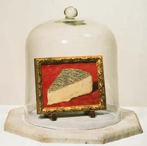

The riddle of representation: two humans, a monkey, and a robot are looking at a piece of cheese; what is common to the representational processes in their visual systems? The answer is here.

Shimon Edelman
Artwork: Rene Magritte